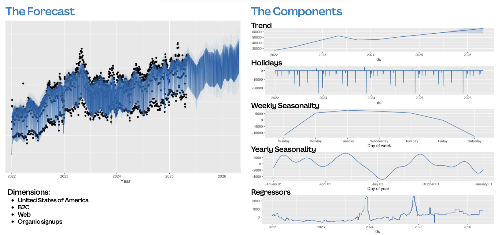
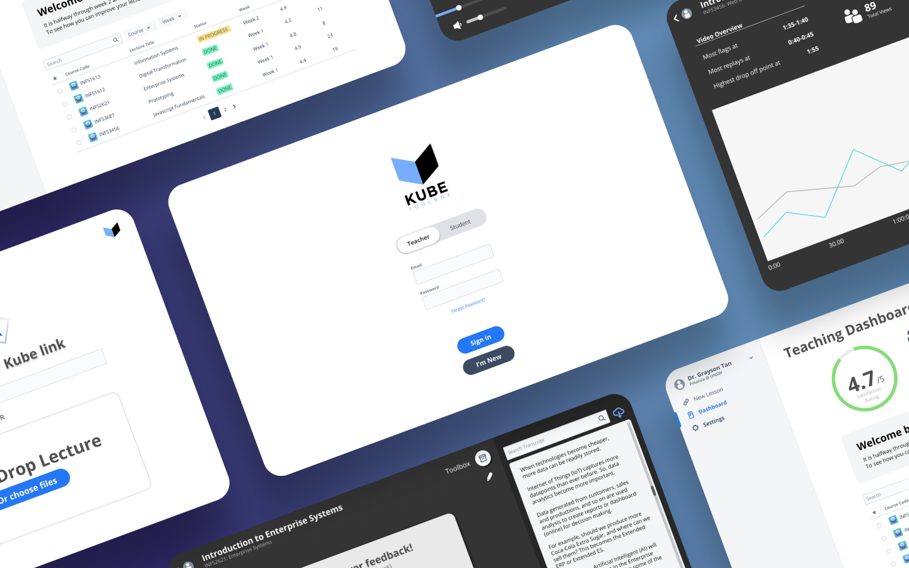
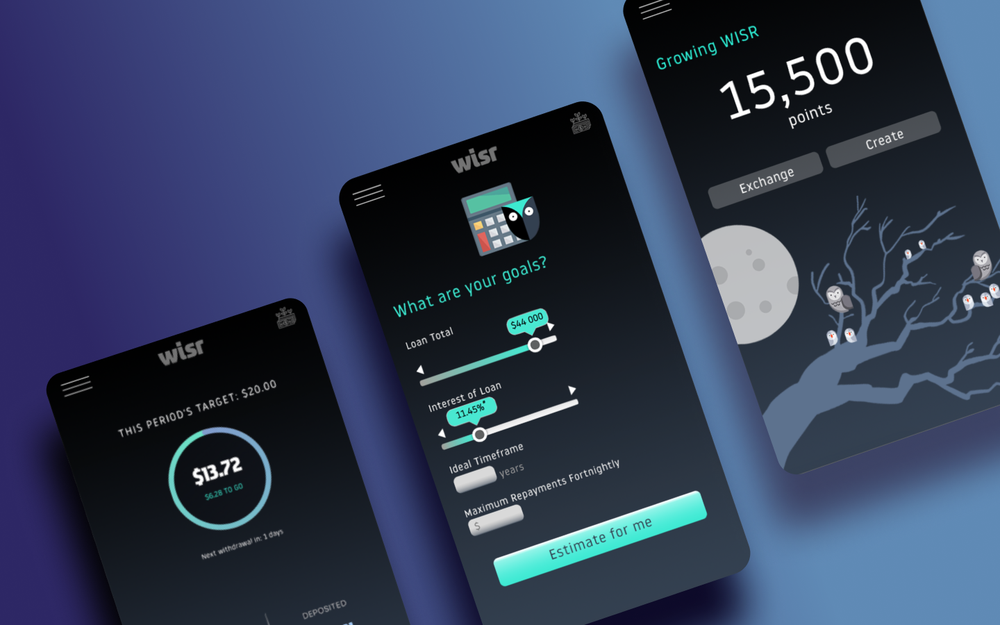

Hi, I’m Grace.
Seasoned modeller and artist.
My career has focused on building and owning models across a diversity of industries — from risk management to investment banking to FP&A — I'm fluent in utilising R, Excel and VBA to turn complexity into strategic clarity.
Most notably, at Macquarie Capital, I was the primary modeller for the sell-side corporate model supporting Blackstone’s A$24bn acquisition of AirTrunk.
I’m also an artist at heart: whether it be UX design or traditional oil painting, I instinctively bring a strong visual impact to everything I make or build.
- Diploma of Fine Arts (Painting) at RMIT • 2022
R
Forecasting Signups with Prophet

A scalable Prophet model that predicts signups across 25 countries and regions, segmented by user type, acquisition channel and platform. Utilising performance marketing spend, campaign dates and holiday calendars as regressors, the model produces a daily forecast for signups that feeds into a downstream MAU model.
Credit Risk Stress Testing
Developed an end-to-end IFRS9 credit stress testing model to assess balance sheet exposures under varying macroeconomic, FX, and climate scenarios. The framework integrates PD/LGD, transition matrices, re-origination, growth modelling to calculate stage-level ECL for forward-looking risk assessment.
VBA
Workflow Optimisation Tools
A collection of macros that perform dataset collation, scenario logging, multi-sheet exports and automated output distribution across Excel and PowerPoint.
Initiatives Modelling
Runs uplifts across new MAU, reactivation, and churn metrics to reflect country goals, significantly reducing manual recalculation effort.
UX
Kube Toolbox

Kube Toolbox bridges the feedback gap between students and educators. Students can flag sections for revision and submit anonymous feedback, whilst teachers receive automated analytics reports on engagement, drop-off trends and learning pain points via Twilio SendGrid.
Wisr Spending

Introduced Wisr Spending and Wisr Rewards into the WISR ecosystem to help customers set structured repayment goals while incentivising debt reduction through gamification.